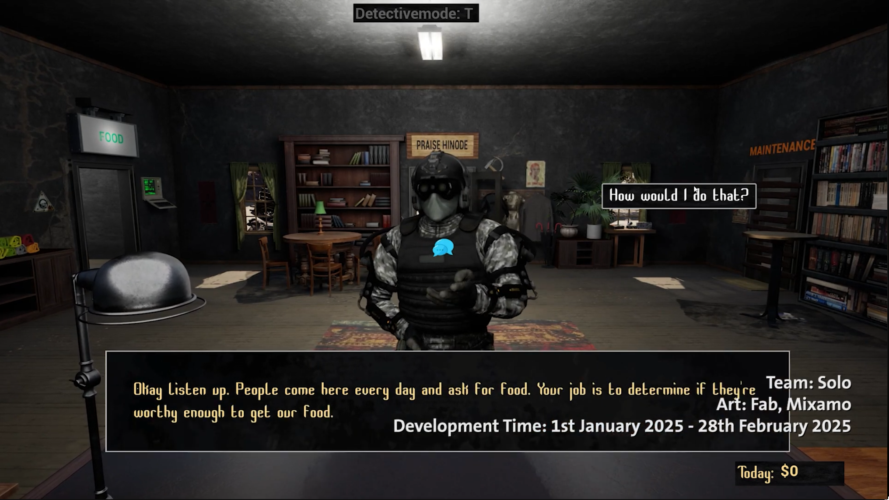
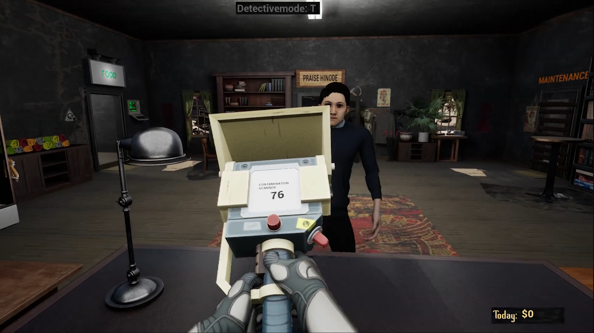
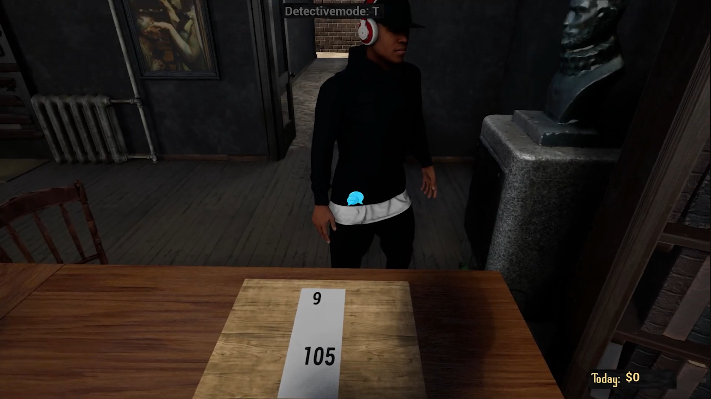
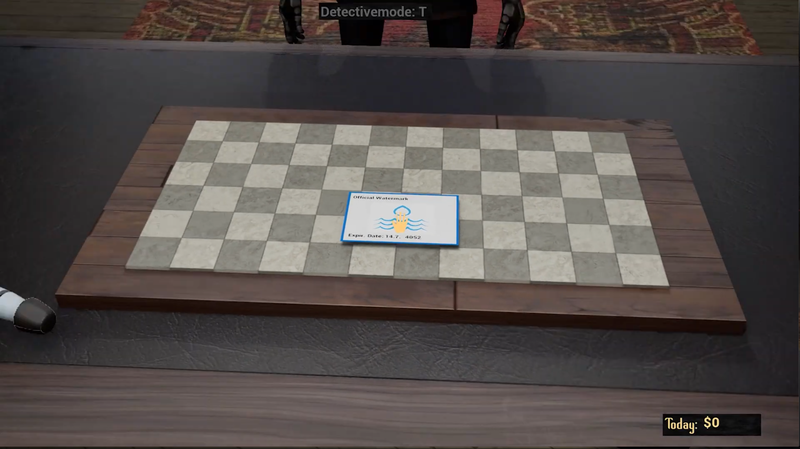
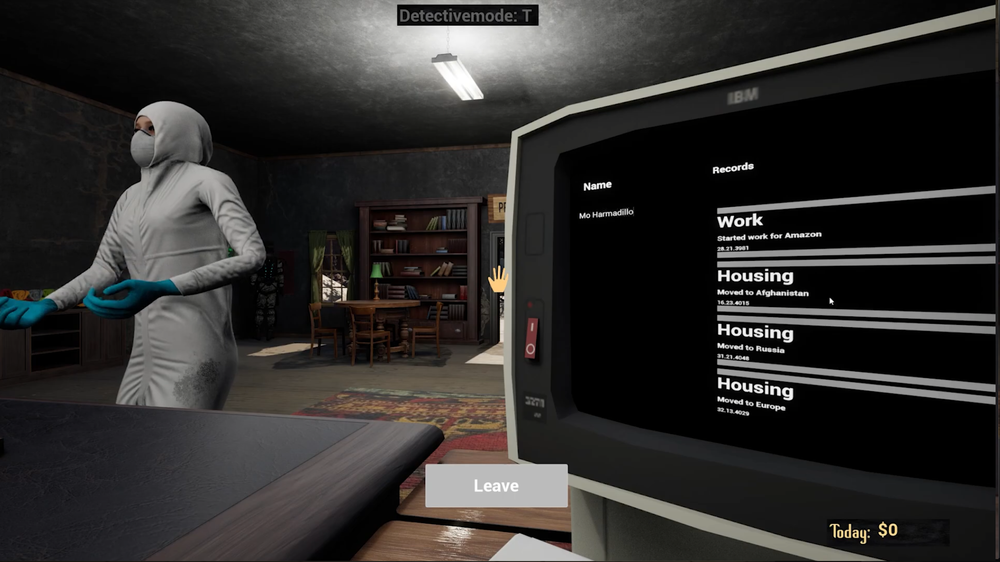
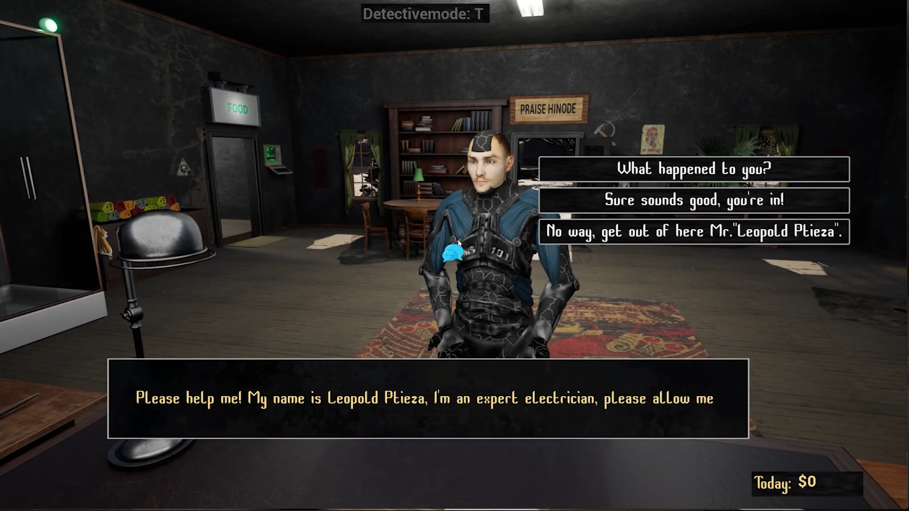
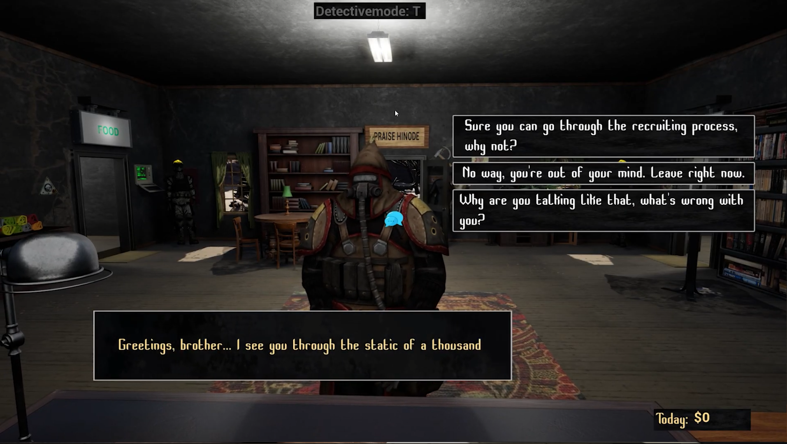
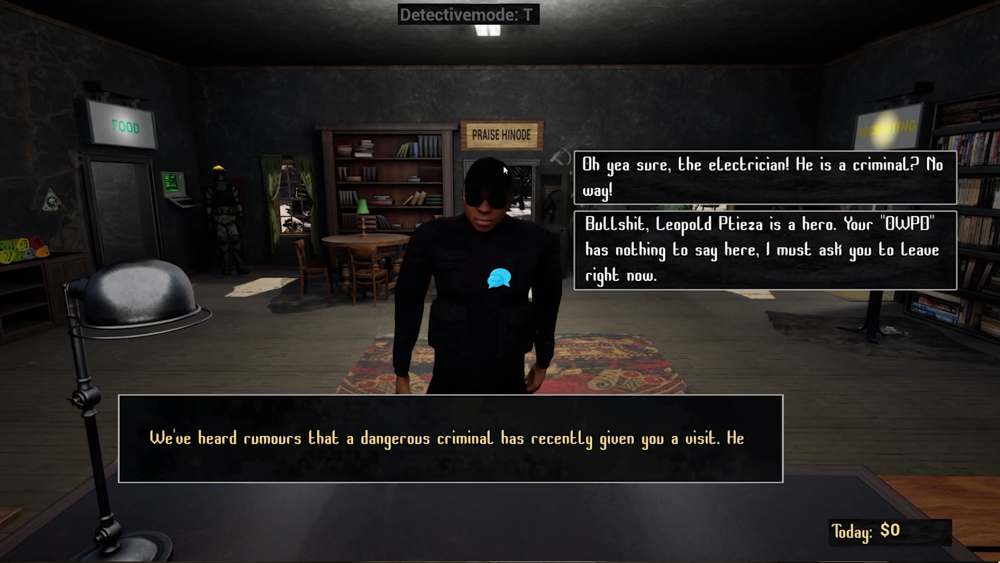
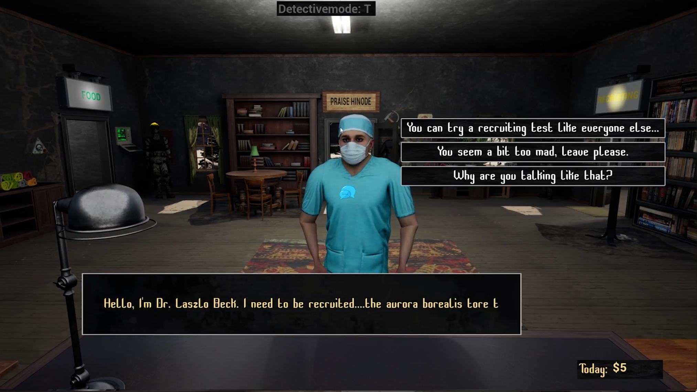
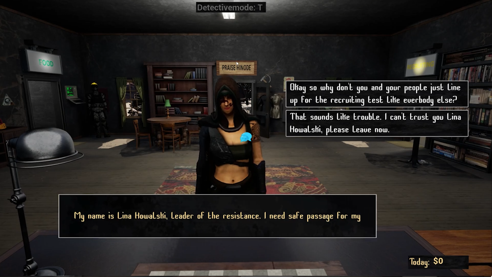

Kurzbeschreibung
PRAISE HINODE (stark inspiriert von "Papers, Please") findet in einem Post-Apokalyptischen Setting statt. Der Protagonist erhält Zuflucht in einer der letzten Bastionen der Menschheit - Hinode. Hinode wird von einem korrupten und moralisch fragwürdigen Regime geführt. Der Protagonist erhält die Aufgabe einen neuen Posten von Hinode zu besetzen: Die Ausgabe-Station von Hinode die Kontakt mit den im Umland lebenden Menschen aufnehmen und diese mit Vorräten versorgen soll. Der Spieler muss strengen Anweisungen folgen, um genug Geld zu sammeln und seine Familie versorgen zu können.
Hintergrund
Im Hauptfokus dieses Projektes stand die Herausforderung ein komplexes Dialog-System zu erstellen. Bis zu diesem Projekt hatte ich oft Schwierigkeiten dynamische UI-Elemente zu erstellen, also dachte ich mir ein sehr Dialog-lastiges Spiel könnte mich aus meiner Komfort-Zone von sehr einfachen UI Elementen locken und mir mit meinen UI-Problemen in Zukunft helfen. Außerdem wollte ich unbedingt noch vor dem 01.03.2025 ein fertiges Projekt für mein Portfolio haben. Ich habe mir einen sehr eindeutigen Zeitplan gesetzt: 01.01.2025 - 31.01.2025 Implementierung aller wichtigen Funktionen ; 01.02.2025 - 28.02.2025 Art/Design + Polishing
Spielablauf
- Am Anfang jedes Tages (von Tag 1 bis 4) geht ein Security-Personal-NPC zum Spieler und erklärt die neuen Regeln, die es zu beachten gilt. Missachtet der Spieler die Regeln (Beispiel: NPC der um Essen bittet darf nur nach Dekontaminations-Dusche in den Essen-Vorratsraum, Spieler schickt NPC trotz hoher Kontamination ohne Dekontaminations-Dusche in den Essen-Vorratsraum -> Regel missachtet) verliert der Spieler Geld, welches er braucht um seine Familie am Leben zu halten. Entdeckt der Spieler ein Problem/Diskrepanz mit den Werten des NPCs, kann er den NPC im Detective-Mode (Taste T), auf dieses Problem ansprechen, indem er im Detective-Mode die beiden Objekte markiert, die ein Problem aufweisen (Beispiel: Kontaminations-Wert des NPCs zu hoch: Spieler markiert Kontaminations-Scanner und den Zettel der den erlaubten Kontaminations-Wert anzeigt -> Spieler kann NPC darauf ansprechen, den NPC daraufhin raus schicken, oder eine Dekontaminations-Dusche zuweisen)
- Tag 1: Essens-Ausgabe. NPCs können in die Ausgabe-Station kommen und um Essen bitten. Der Spieler muss mit einem Kontaminations-Scanner den Kontaminations-Wert des NPCs prüfen, um zu entscheiden ob dieser in den Essen-Vorratsraum gehen darf, oder nicht. Außerdem hat der Spieler die Wahl bis zu 3 NPCs am Tag eine Dekontaminations-Dusche nehmen zu lassen. Außerdem bricht der Tag früh ab, weil ein NPC durch eine Tür in Hinode eindringt.
- Tag 2: Rekrutierung. NPCs können ab dem zweiten Tag rekrutiert werden, wenn sie dies erbitten. Die NPCs müssen einen Rekrutierungs-Test ausführen und gehen dann zurück zum Spieler und legen ihre Ergebnisse vor. Der Spieler muss den Test überprüfen und entscheiden wie er mit dem NPC fortfährt (bestanden -> rekrutieren ; durchgefallen -> NPC raus schicken) Außerdem stehen ab dem zweiten Tag 2 Security-Personal-NPCs im Raum des Spielers. Einige NPCs werden nicht auf die Aufforderungen des Spielers hören, der Spieler muss dann den Raum, in den der NPC gehen möchte, abriegeln, und einen der Security-Personal-NPCs befehligen diesen NPC raus zu eskortieren.
- Tag 3: Wasser-Ausgabe. Ab dem dritten Tag können NPCs auch um Wasser bitten. Der Spieler muss die Wasser-Marke des NPCs überprüfen, ob diese original und noch gültig ist.
- Tag 4: Daten-Terminal. Ab dem vierten Tag kann der Spieler eine Datenbank an einem Terminal überprüfen. Jeder NPC muss überprüft werden, ob die Datenbank Einträge über diesen NPC besitzt, die ihnen den Zugang zu den gewünschten Ressourcen verbieten sollten (Beispiel: NPC will Essen -> evtl. Eintrag in Datenbank "Hat versucht unser Essen zu vergiften! Kein Zugang erlauben!")
- Am Ende jedes Tages erscheint eine Übersicht über den Status der Familie. Es muss täglich Essen, Wasser, Strom, Heizkosten und unter Umständen Medizin bezahlt werden. Reicht das Geld für eine dieser Dinge nicht mehr aus, besteht die Chance dass zufällige Familienmitglieder entsprechende negative Zustände erhalten (zB Heizkosten nicht bezahlt -> "kalt", wieder nicht bezahlt -> "friert", wieder nicht bezahlt -> "krank"). Nach dieser Übersicht endet der Tag und der nächste beginnt.
- Bevor der nächste Tag richtig startet, kann der Spieler noch die aktuelle Zeitung lesen, um zu erfahren was am Vortag in Hinode passiert ist. Dort sieht er dann wie sich welche NPCs bemerkbar gemacht haben (z.B."Leopold Ptieza" repariert Wasserwerke, usw.)

Features
Ressourcen/Überprüfungen

Kontamination
Der Spieler kann NPCs mit dem Kontaminations-Scanner auf ihren Kontaminations-Wert überprüfen. Der erlaubte Kontaminations-Wert kann sich jeden Tag ändern.

Rekrutier-Test Ergebnisse
Das Ergebnis des Rekrutier-Tests besteht aus 2 Zahlen. Beide Zahlen müssen in gewissen vorgegebenen Reichweiten liegen, um den Test zu bestehen.

Wasser-Marke
Der Spieler muss überprüfen ob die Marke original ist (das Bild in der Mitte der Marke kann sich ändern) und ob die Marke noch gültig ist (auf jeder Karte steht ein "gültig bis:", dieses darf nicht abgelaufen sein)

Datenbank-Einträge
Jeder NPC muss nach seinem Namen gefragt und die zugehörige Datenbank-Einträge überprüft werden. Am Datenbank-Terminal kann der Spieler nach Eingabe des NPC-Namen alle zugehörigen Datenbank-Einträge einsehen.
Einzigartige NPCs (Beispiele)

Leopold Ptieza
Ein Elektriker, der um Rekrutierung bittet. Er schafft den Rekrutierungs-Test nicht, bittet dennoch darum rekrutiert zu werden und verspricht dem Spieler, dass es sich für ihn lohnen wird.

Verrückter Ödländer
Ein verrückter Ödländer der kaum verständlich spricht. Er möchte Essen, hat aber einen viel zu hohen Kontaminations-Wert. Der Ödländer warnt den Spieler vor großem Unglück wenn seiner Bitte um Essen ignoriert wird.

John Kero(Banditen-Anführer)
Ein Banditen-Anführer der vorgibt einer angeblichen Ödland-Polizei anzugehören und nach "Leopold Ptieza" zu suchen.

Dr. Laszle Beck
Ein sehr guter Arzt, besteht jedoch den Rekrutierungstest nicht.

Lina Haul (Widerstands-Anführerin)
Die Anführerin des Widerstandes gegen das Regime von Hinode. Sie bittet den Protagonisten um Hilfe um ihre Unterwanderung von Hinode starten zu können.
Technische Details
- Engine: Unreal Engine (Blueprints / Visual Scripting)
- Source Control: GitHub.
- Entwicklungszeit: 2 Monate (01.01.2025 - 01.03.2025)
- Solo-Projekt
Herausforderung → Lösungsweg
- Herausforderung: In 2 Monaten ein vollständigen Prototypen erstellen.
- ->Lösung: Strikte Zeiteinteilung: Mir im Januar die Grenze zu setzen mit dem Code/Programmieren fertig zu sein, hat extrem dabei geholfen genügend Zeit zum einbauen von 3D Models/Worldbuilding zu haben, und um dann sogar noch viele neue einzigartige NPCs zu implementieren.
- Herausforderung: Robustes, dynamisches Dialogsystem erstellen.
- ->Lösung: Zum ersten mal die "Data Table"-Klasse richtig genutzt. Diese Klasse hat mir sehr dabei geholfen einfach und schnell neue Dialoge zu erstellen.
Learnings
- "Data Table"-Klasse zum speichern vieler verschiedenen Werte für den selben Nutzen kann sehr hilfreich sein.